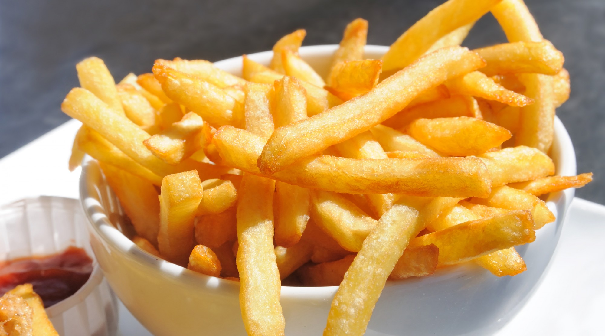

All About Sweet Potatoes
The best vegetable there
The sweet potato is a starchy, large root vegetable with a sweet taste. They are known to contain a relatively high nutritional value, most notably the vitamin beta-carotene. Sweet potatoes have versatile uses for cooking. They can be baked ,steamed, fried, microwaved. They are frequently used in nursery dishes, curries, soups, burgers, desserts, and much more
Top Producers of Sweet Potatoes
- China
- Uganda
- Nigeria
Fun Facts
- Sweet Potatoes are only directly related to potatoes
- The flesh of sweet potatoes can vary in color to include white, red, pink and purple
- It is a misconception that orange sweet potatoes are the same as yams